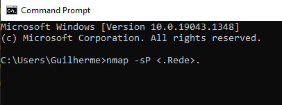
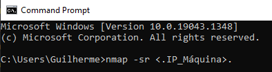
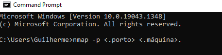
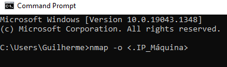
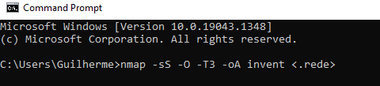
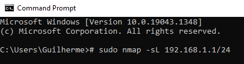
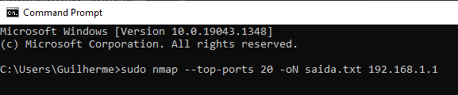

EXEMPLOS DE USO DO NMAP
Na área da segurança informática, concretamente ao nível da rede, existem muitas ferramentas
interessantes para avaliar se um sistema está vulnerável ou não.
O resultado produzido por
este tipo de ferramentas pode ser usado por pessoas mal intencionadas para os mais diversos
fins ou por proprietários ou administradores de sistemas para melhorarem a segurança dos seus sistemas.
Uma das ferramentas que permite facilmente identificar sistemas e serviços é o NMAP.

Tal como referido, o NMAP é uma ferramenta usada para reconhecimento de sistemas e serviços
numa rede de dados. Esta ferramenta é uma das mais populares neste segmento e as opções que
disponibiliza são variadíssimas.
Descobrir endereços IP numa rede
Considere que pretende saber quais os endereços IP "ativos" numa determinada rede de dados.
Com o NMAP é muito simples! Para tal basta que execute o comando nmap -sP <.Rede>. O resultado
da execução deste comando permite, por exemplo, saber que outras máquinas andam na sua rede.

Saber quais os portos TCP abertos de uma máquina
Se pretende saber quais os portos lógicos abertos numa determinada máquina só tem de usar o comando nmap -sr <.IP_Máquina>.

Saber se um porto específico está aberto
Considere que pretende saber se um determinado porto lógico está aberto numa determinada máquina. Com
o nmap o processo é bastante simples sendo apenas necessário indicar o porto lógico e a máquina: nmap -p <.porto> <.máquina>.

Saber o sistema operativo de uma determinada máquina
Quer saber remotamente qual o sistema operativo usado numa determinada máquina? O NMAP consegue, geralmente saber qual o
sistema instalado (incluindo a versão). Para obter essa informação pode usar o comando nmap -o <.IP_Máquina>

Inventário de todas as máquinas de uma determinada rede
Ter um inventário de todas as máquinas de uma determinada rede é simples. Com o
comando nmap -sS -O -T3 -oA invent <.rede> podemos saber para cada PC da rede
indicada quais os portos abertos, MacAddress das máquinas, qual o sistema
operativo, latência, etc.

Detecção de Versão de Serviços
A detecção de serviço é uma das técnicas mais usadas no nmap, permitindo por exemplo identificar
vulnerabilidades de segurança ou simplesmente verificar se um serviço está rodando em uma porta específica.
A flag sV habilita detecção de serviço, retornando informações sobre serviços e versões.
Identificar hostnames
Podemos identificar os nomes de hosts ativos na rede com a flag -L
# sudo nmap -sL 192.168.1.1/24

Salvar a saída em um arquivo de texto
Podemos salvar a saída gerada pelo nmap em um arquivo de texto, que pode ser analisado posteriormente, com a opção -oN:
sudo nmap --top-ports 20 -oN saida.txt 192.168.1.1
E então abrir essa saída usando qualquer editor de textos, ou até mesmo o comando cat.
